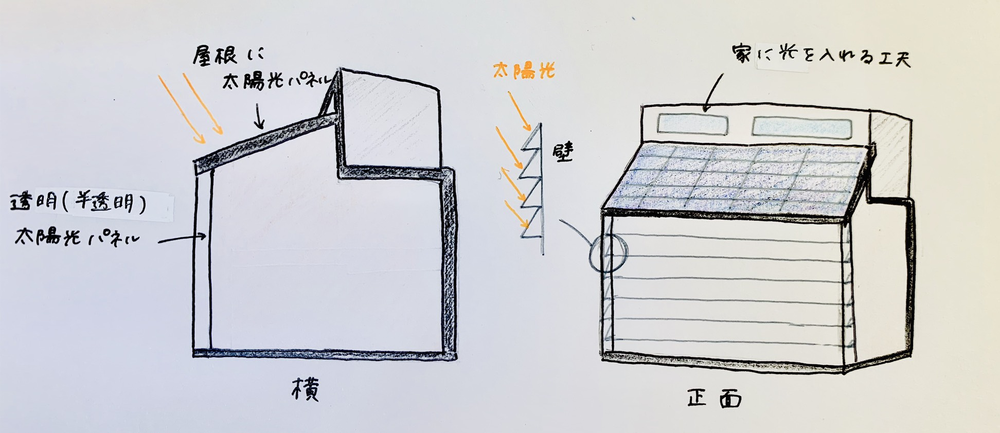
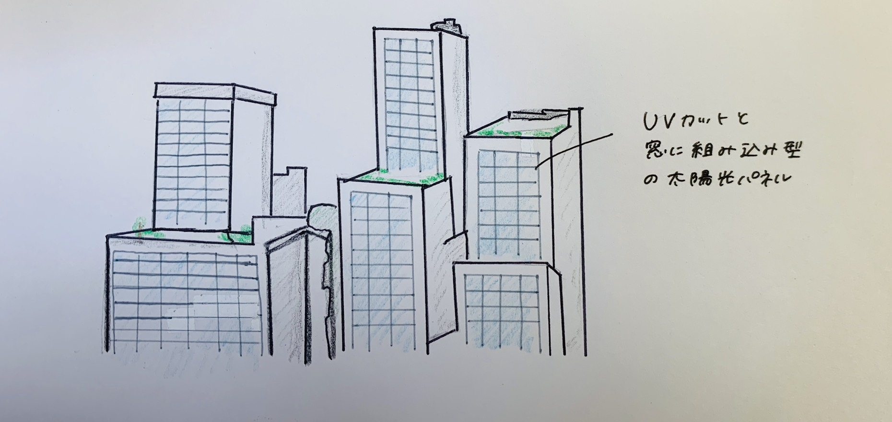

←図1 日本の発電電力量構成（2016年）
気候変動というものは、環境だけが変化するのではなく、私たち人間の経済や能力、人間活動にまで大きく関わる。 気候変動で最も身近な現象として「地球温暖化」が挙げられる。しかし、地球温暖化が私たちにどのような影響を与えるのか知らない人も多いだろう。 世界の中心国が温室効果ガス削減について対策を進めている事が、国連気候行動サミットにおいて明らかになったにもかかわらず、日本の現状に対する評価は非常に低く、 気候問題に対する意識の低さが目立った。
図1は、日本の発電電力量の内訳であり、天然ガス・石炭が高い割合を示してあり、我が国は、83％と高い割合でCO₂を排出する電源を使ってい る。日本のエネルギー自給率は、約8％であり、エネルギー資源のほとんどは、海外からの輸入に頼っているのが現状だ。もともと日本は、石油や天然ガ スなどの資源に乏しいため、他の先進国に比べて自給率が低い。このまま海外からの輸入に頼り、化石燃料に依存するこの現状を続けることは地球温暖化をさらに進める行動 であり、安定したエネルギーを手にすることができなくなる可能性も高い。化石燃料などの有限な資源を使うのではなく、無限の可能性を広げる再生可能エネルギーに重点を おき、日本でエネルギーを作らなければならないと思い、私たちの最も身近にある太陽光発電に注目して考える。
太陽光発電は、太陽電池を利用して太陽の光エネルギーを直接電気に変換する発電方式。太陽電池は半導体の一種であり、光を当てると電気を起こす 特質を利用している。現在の太陽電池の変換効率は10～20％程度となっている。ソーラーパネルは、太陽電池をたくさんつなげて大きなパネルにしたもの。 小さな単位が「セル」、セルを板状につなげたものが「モジュール」、モジュールをつなげた最大の単位が「ソーラーパネル」である。 1枚のセルは出力が小さいため、屋根にはモジュール単位で太陽電池をのせる。
太陽光発電は、半導体に光を当てると電気が生まれる「光電効果」という仕組みを用いて発電する。太陽電池（ソーラーパネル・モジュール）には、 n形、p形という2種類のシリコン半導体を重ね合わせた構造となっている。 半導体に太陽光が当たると、電子の光アネルギーを吸収して動き出す。このとき、2カ所の電極を導線で結ぶと、電流が流れる。エネルギーを抱えた電子が動き出して、 仕事をし、半導体に戻るサイクルを繰り返して、電力が供給される。※1
現在ある太陽電池は、大きく分けて3種類あり、どの太陽電池も高い性能を持つが、課題点も見られる。下記に太陽電池の種類と特徴を簡単にまとめる。
単結晶シリコン太陽電池は、単結晶のシリコンの塊を厚さ200㎛程度にスライスして作製される。実用化されている太陽電池の中で最も高く、耐久性や信頼 性にも優れている。しかし、コストが高く、大量生産に不向きという課題がある。
多結晶シリコン太陽電池は、多結晶のシリコンの塊を厚さ200㎛程度にスライスして作製される。単結晶と比べ、変換効率は落ちるが、安価で製造が容易 であるため、現在もっとも普及している。
薄膜系シリコン太陽電池は、ガラスの上にプラズマなどを利用して、非常に薄いシリコンの膜を成膜して作る。大面積で量産ができるという特徴があるが、 結晶系と比較して効率が落ちる。
CIS系太陽電池は、銅、インジウム、セレンなどを原料とした薄膜太陽電池であり、製造工程が簡単で高性能が期待できる。 またCdTe系太陽電池は、毒性の高いカドミウムを原料に使用するため、日本では普及していない。 集光型太陽電池は、多接合太陽電池にレンズや鏡で集光することで、高い発電効率を実現できるが、低コスト化の課題がある。
有機系には、色素増感と有機薄膜がある。色素増感太陽電池には、酸化チタンの表面に吸着した色素が光を吸収して電子を放出することで発電する、新しいタイプの 太陽電池であり、製造が簡単で応用範囲が広いため今後の発展が期待される。また、有機薄膜太陽電池は、材料が安価で、印刷法やインクジェット法などにより大面積を 簡単に作製できるため、大幅な低コスト化が見込まれる。
太陽光は多くの種類があり、用途や場所で使い分ける必要性がある。
日本は、2008年に 低炭素社会づくり行動計画 を麻生総理（当時）が打ち出した。この計画は、「世界全体の温室効果ガス排出量を現状に比して2050年までに半減」という目標を提案した。 また計画の中には、飛躍的な効率向上と低コスト化を達成する革新的太陽光発電を用いて、2030年以降に発電効率40％超活発電コスト7円/㎾hの太陽電池の技術確立を目指すことを決めた。 現在の屋根に設置する方法だけでは、40％を達成することはできないだろう。
40％を達成するための課題として、太陽光の経済性の改善、革新技術の開発、太陽電池関連産業の育成に取り組む必要がある。 また、国内市場の拡大に向けて、太陽光発電の利用・用途の拡大、利用基盤・利用環境の整備を推進する必要がある。
○発電コストに関しては、2030年に7円/kwh程度を達成する。
○モジュール変換効率に関しては、2025年までに
①結晶系シリコンは25％ ②薄膜系シリコンは18％ ③CIS系は25％ ④集光型は40％ ⑤色素増感は15％ ⑥有機薄膜は15％にそれぞれ高める。
○国内企業の生産能力に関しては、世界における太陽光発電の年間設置量の3分の1を日本の産業が供給すること。
これらを目標に掲げている。
太陽光発電がこれからどのように私たちの生活と関わっていくのだろうか？私が思い描く革新的な太陽光パネルの設置についてモデルを紹介する。
太陽光発電搭載住宅モデル 太陽光搭載企業ビルモデル
窓に組み込むことのできる、半透明な太陽光パネルを実現することで、屋根だけでなく窓にも設置することで無駄なく太陽の光を集めることができる。 窓に設置するパネルを階段状にすることで、太陽の光を効率よく集められるように工夫する。
企業ビルモデルも同じように、窓に太陽光パネルを組み込む。そして、一部の窓を半透明にするなどの工夫を行うことで、紫外線カットも見込まれる。 このモデルを実現するためには、蓄電池や有機物系の太陽電池の開発を行っていかなければならない。
太陽光発電が未来の電源として大きな存在感を持つことになると期待している。これからの日本のニーズに合うものとして、有機物系の太陽電池 の開発に取り組むことで、用途の可能性が広がると考える。また、災害が多い日本にとって電力は必要なものである。電力をためるための蓄電池の開発も行い、 発電・ためるサイクルを確立することで、災害にも強い日本を作っていかなければならない。 私たちの目の前には日常があるが、10年後、20年後には今の日常がなくなっているかもしれない。「地球温暖化」はゆっくりと進み、 見えないところで地球をむしばんでいることを忘れてはならない。これから、私たちにできることは資源を減らすのではなく、自然を利用するエネルギーを使うことに考えを変え、 100年後も変わらず、資源や自然が日本にある世界を作るために今、私たちにできることはなにか考えなければならない。
※1 タイナビ.太陽光発電導入ナビゲーション https://www.tainavi.com/feature/solar_power/
環境省 https://www.env.go.jp/press/file_view.php?serial=11912&hou_id=10025